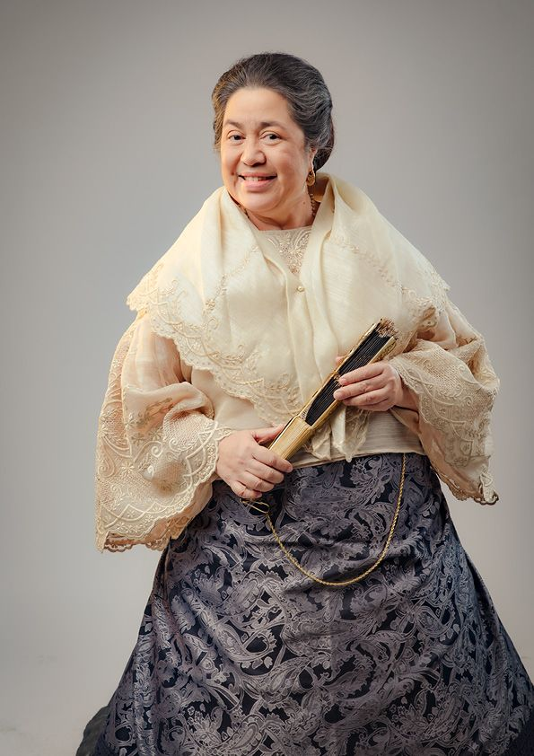
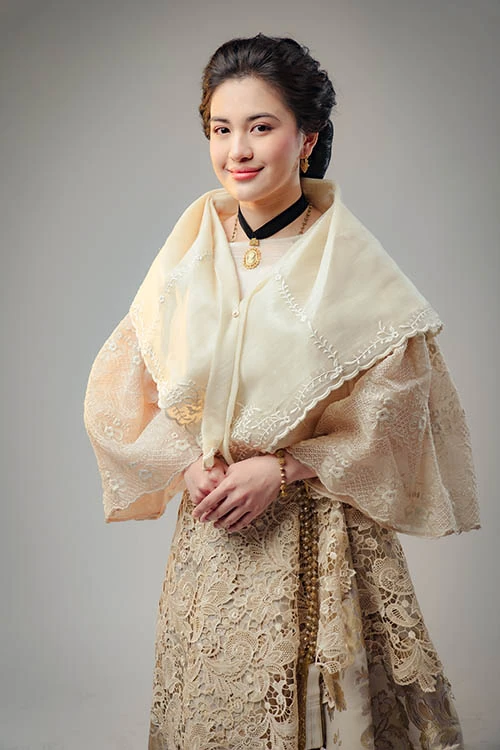
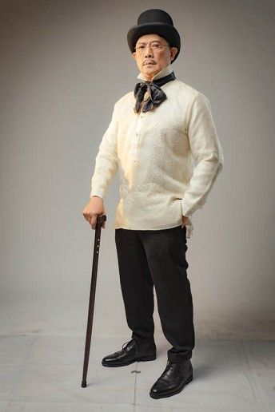
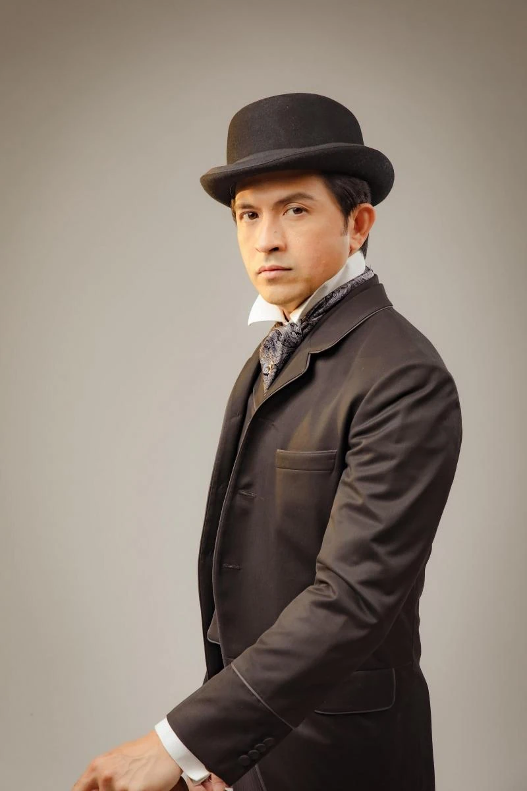

Chracters in Noli Me Tangere
| Characters in Noli Me Tangere |
| Tenyente Guevarra | - lieutenant of the Guardia Civit
- a close friend of Don Rafael Ibarra. He reveals to Crisóstomo the circumstances of Don Rafael's death.
|
| Sisa | - the deranged mother of Basilio and Crispín.
- beautiful and young, she loves her children very much but cannot protect them from beatings by her husband, Pedro.
|
| Basilio | - young boy living in San Diego and the older brother of Crispin.
- Has a parent that is an aggressive alcoholic gambler
- Inampon siya ni Kapitan Tiago matapos maghirap nang mamatay ang kanyang ina’t kapatid kaya nakapag-aral siya.
|
| Crispin | - one of the sacristans of its church alongside his brother Basilio.
- accused of stealing from the church's coffers, Crispin was punished by the head sacristan and Padre Salvi.
|
| Padre Damaso | - Corrupt Priest
- Real father of Maria Clara
- a Franciscan priest in the Philippines sometime in 1858, serving for three years at a small town.
|
|  | Tiya Isabel | - he aunt and primary caretaker of Maria Clara and the cousin of Kapitan Tiago
- She is the head housekeeper in the De Los Santos homestead.
|
|  | Maria Clara | - the daughter of Capitan Tiago and the fiancee of Crisostomo Ibarra
- a sweet and kindhearted young woman. Raised with affection, Maria Clara was well-loved by everyone around her
|
|  | Kapitan Tiago | - an influential businessman in San Diego and the father of Maria Clara.
- Religious man
|
| Pilosopo Tasyo | - old scholar living in San Diego.
- Thought of as a lunatic due to his unorthodox ideas, he became an adviser for several individuals in town.
|
|  | Crisostomo Ibarra | - Son of Don Rafael Ibarra
- he returned to his hometown and sought to establish a proper school there
|